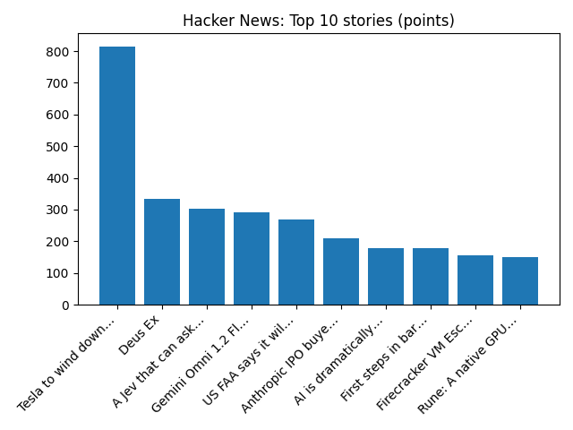

Pope Leo XIV arrives in Uruguay at start of South American tour less than a month after lung surgery - AP News
AP — Headlines (Google News)
YOUR DAILY INTELLIGENCE BRIEF · 2026-11-07
Global watch: Pope Leo XIV arrives in Uruguay at start of South American tour less than a month after lung surgery - AP News, Connecticut Sen. Chris Murphy is discharged from hospital after a stroke and goes to rehab facility - AP News.
Northern Virginia: Last-minute cancellation of Northern Virginia Christmas market leaves 200 vendors scrambling - WUSA9, U.S. News & World Report Ranks Porter Traditional School No. 1 Middle School in Northern Virginia, No. 2 in Virginia - Prince William Living.

Global coverage includes Pope Leo XIV arrives in Uruguay at start of South American tour less than a month after lung surgery - AP News; Connecticut Sen. Chris Murphy is discharged from hospital after a stroke and goes to rehab facility - AP News; Paraguay ex-president Peña placed under house arrest after impeachment - Reuters. Local coverage includes Last-minute cancellation of Northern Virginia Christmas market leaves 200 vendors scrambling - WUSA9; U.S. News & World Report Ranks Porter Traditional School No. 1 Middle School in Northern Virginia, No. 2 in Virginia - Prince William Living.

Film inventory report
The Film Inventory Report or Daily Raw Stock Log is a filmmaking term for a report produced by the clapper loader each day. The report shows how much raw film stock was used that day, the number of good and no-good shots and the amount of film stock wasted.
https://en.wikipedia.org/wiki/Film_inventory_report
Runs so far today: 1